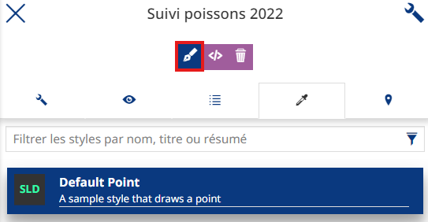
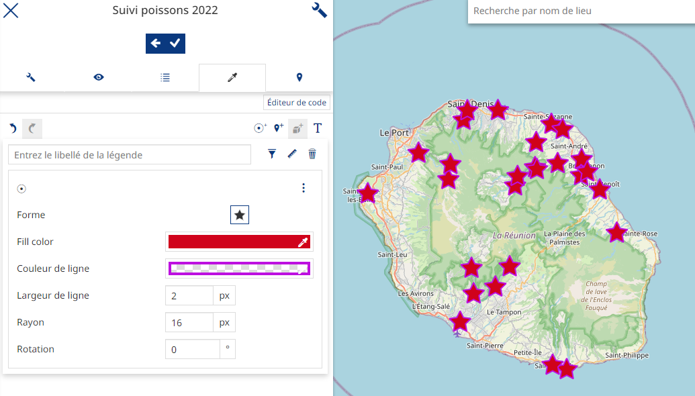
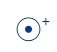
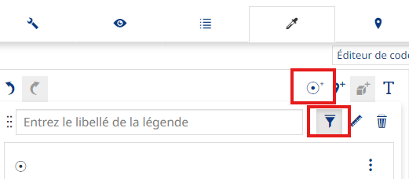
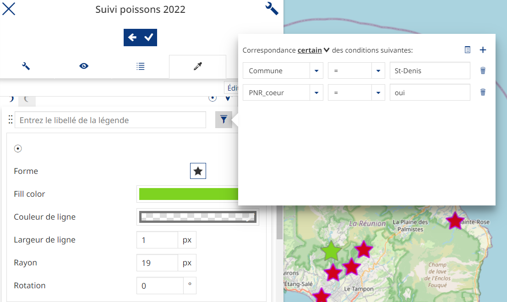
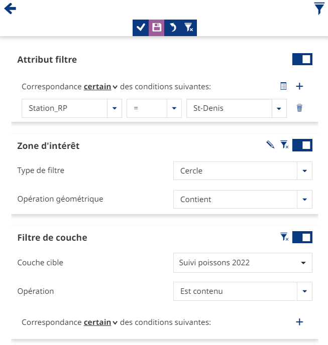
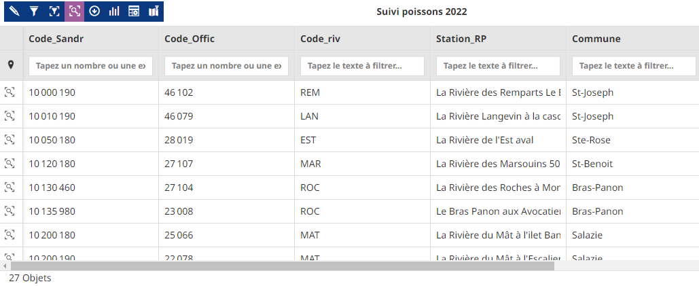
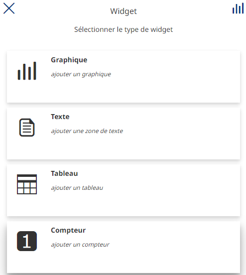
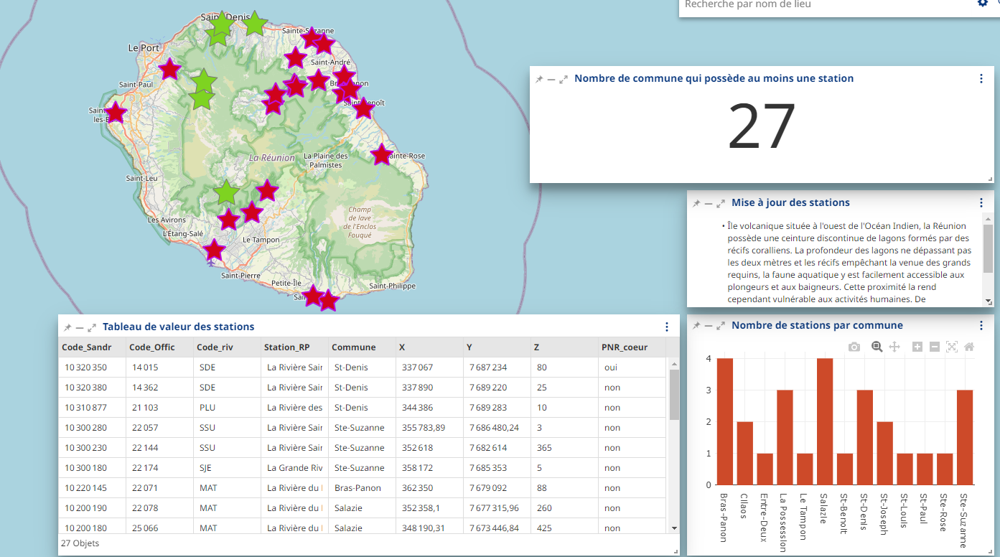

Le visualiseur
Introduction
Le module cartographique de cette plateforme permet de présenter des couches de données géographiques dans un environnement technique. Cette interface permet de représenter plusieurs couches géographiques mais ne peut pas se substituer à l’utilisation complète d’un outil SIG bureautique type QGIS.
L’interface se présente comme ceci :

1 : l’arborescence des couches
2 : recherche d’un lieu
3 : les fonctionnalités
4 : les outils de navigation
5 : les fonds de plans
Note
La donnée peut ne pas s’afficher si elle n’est pas disponible ou alors dans le mauvais référentiel de coordonnée.
La gestion des couches
Si vous cliquez sur 1, l’arborescence des couches va apparaître et vous pourrez :
rendre visible ou non la couche
modifier l’ordre des couches
modifier l’opacité en pourcentage

Ajouter des données dans l’interface
Si vous n’avez pas séléctionné de données, dans l’arborescence des couches, vous pouvez, à l’aide de ces 3 boutons :
{kind=link}
ajouter des données directement dans le visualiseur, du catalogue interne et d’autre catalogue enregistré :

Dans cet onglet vous pouvez choisir le catalogue, par défaut, le catalogue est celui de l’office de l’eau mais vous pouvez faire dérouler la liste pour choisir un autre catalogue. Puis vous pouvez chercher par mots clés des données et les ajouter à l’interface.
Note
Vous pouvez demander au service informatique de rajouter un catalogue de données géographiques dans cet onglet.
ajouter des groupes pour vos données
créer des annotations :

Changer les paramètre de la couches - Style - Informations - Légende
Lorsque vous cliquez sur une couche, plusieurs fonctions apparaissent :

{kind=link}
Modifier les réglages de la couche
{kind=link}
{kind=link}
Dans ces réglages vous pouvez modifier, les informations, l’affichage, et surtout modifier le style des couches en cliquant sur la pipette :
{kind=link}
{kind=link}
Si vous ne pouvez pas modifier le style directement il faudra en définir un nouveau et le modifier, cliquez sur le pinceau pour définir un nouveau style puis modifier le en cliquant sur ce boutton .
{kind=link}
{kind=link}
{kind=link}
Une fois dans l’interface de mofication du style, vous pouvez modifier le style actuel et ajouter d’autres règles. Les styles fonctionnent avec des règles superposées les unes aux autres, cliquez sur cet icone pour ajouter une règle  et sur cet icone pour filtrer le style en fonction des attributs:
{kind=link}
{kind=link}
{kind=link}
Par exemple vous pouvez ajouter une règle qui colore les stations de Saint-Denis en vert :
{kind=link}
Filtrer les éléments de la couche
{kind=link}
{kind=link}
Vous pouvez filtrer sur un attribut, filtrer en dessinant une zone géographique, ou encore filtrer en fonction d’un attribut d’une autre couche.
{kind=link}
{kind=link}
Vous pouvez filtrer, télécharger le tableau, le modifier et rajouter des éléments, mais ces modifications ne seront pas reportées sur le catalogue.

{kind=link}
{kind=link}
{kind=link}
Vous pouvez créer 4 types de gaphiques différents, et ensuite les ajouter sur la carte :
{kind=link}
Exporter les données de la couche
{kind=link}
Afficher les informations de la couche
{kind=link}
Note
Les options sont dépendantes de la donnée, elle peuvent ne pas être toutes disponible en fonction de la donnée.
Pour les fonds de plans, vous pouvez en changer en cliquant sur l’imagette en bas à gauche; :

Les fonctionnalités techniques
Pour ce qui est des différentes fonctionnalités :

Dans l’ordre, vous pouvez :
Imprimer une réalisation :

Choisir le titre, le format et si la légende apparaît ou non
Importer des données
Exporter la carte au format WMC, ne peut pas être exporté puis ajouté à QGIS.
Ajouter des données à la carte
Charger des cartes déjà enregistrées
Mesurer des distances
Enregistrer la carte :

Vous pouvez choisir une imagette, le titre, vous pouvez aussi, en cliquant sur le crayon, définir un texte qui sera visible à l’ouverture de la carte. Pour définir des droits de lecture et d’édition, vous devez sélectionner un groupe et spécifier si il à les droits de lecture ou d’écriture. L’enregistrement ira dans la page Application.
Afficher les réglages Partager la réalisation Afficher la documentation la documentation Faire le tutoriel Effacer la session